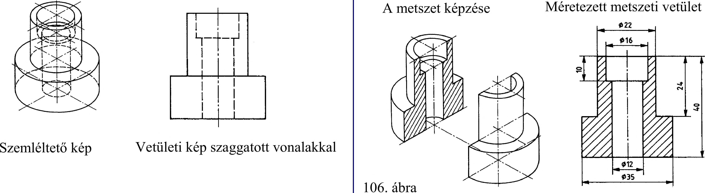

5. Ipari formák nézeti ábrázolása 5.2.2. Az európai vetítési mód nézetrendje Három vetület - az elölnézet, a felülnézet, a bal oldali nézetet elhelyezését és a vetületek képzési irányát mutatja a 103. ábra. Az elölnézethez (a) mint főábrához viszonyítva a többi nézetet a következők szerint kell elhelyezni (104. ábra): - a felülnézetet ( b ) az elölnézet alatt, - a bal oldali nézetet (c) az elölnézettől jobbra, - a jobb oldali nézetet ( d) az elölnézettől balra, - az alulnézetet ( e ) az elölnézet felett, - a hátulnézetet (f) az oldalnézettől balra vagy jobbra, tetszés szerint. 5.2.3. Az amerikai vetítési mód nézetrendje Az elölnézethez (a) viszonyítva a többi nézetet a következők szerint kell elhelyezni (105. ábra): - a felülnézetet ( b ) az elölnézet felett, - a bal oldali nézetet (c) az elölnézettől balra, - a jobb oldali nézetet ( d) az elölnézettől jobbra, - az alulnézetet (e) az elölnézet alatt, - a hátulnézetet (f) az oldalnézettől balra vagy jobbra, tetszés szerint. ... U .... Európai vetítési mód 5.3. Üreges alkatrészek metszeti ábrázolása Az eddigiek alapján egy összetett mértani test külső felületén lévő részlet alkalmasan választott vetületen nézetben megmutatható, így a szaggatott vonalú ábrázolás elkerülhető. A test belsejében lévő részletek azonban továbbra is eltakart részletek maradnak, és így általában csak szaggatott vonallal ábrázolhatok. A szaggatott vonalak használatának elkerülésére speciális ábrázolási módot, az ún. metszeti ábrázolást kellett bevezetni. A belső részletek szaggatott vonalú megrajzolása helyett a gyakorlat egyszerűbb rajzolási módra törekszik oly módon, hogy az ábrázolt testet a belső részleten keresztülhaladó síkkal képzeletben elmetszi. A metszősík és a szemünk közé eső részt eltávolítva képzeli, és a metszősík mögött maradó rész nézetét rajzoljuk meg úgy, hogy a metszősíkkal képzeletben átmetszett felületet a vetületen vonalkázással megkülönböztetjük a ténylegesen látható felületektől. Az ilyen belső részletek megmutatására alkalmas ábrázolást metszetnek nevezzük. A 106. ábra üreges forgástest metszeti rajzának származtatását szemlélteti. Az ábrák tartalmazzák - az üreges forgástest nézeti rajzát, - az üreges forgástest szemléltető rajzát, - az üreges forgástest metszetképzésének szemléltető rajzát, - az üreges forgástest méretezett metszeti vetületét. 30
